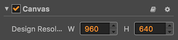
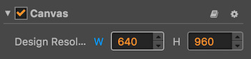
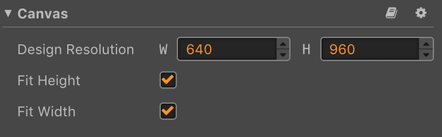
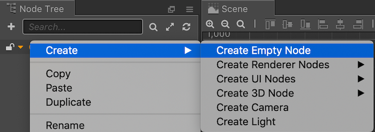
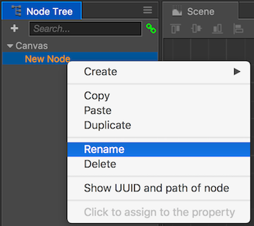
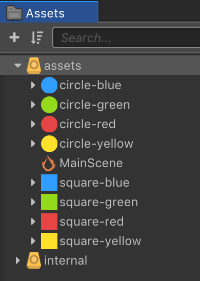
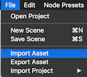

UI housekeeping
We need to do a few tasks to get started laying out our user interface. These items include choosing a design resolution and adding any Sprites that we need to our Cocos Creator project.
Setting the design resolution
One really important task is to decide on a design resolution for our game. This is going to be a portrait oriented game so the pieces have enough time to fall from the top of the screen. Using landscape might not give the player enough time to react. Let's stick with the 960 x 640 design resolution. You can tell what the design resolution is by looking at the properties of the Canvas object:

First, since we want this game portrait we need to swap the width and height with each other. Our height needs to be the biggest number.

Second, we need to set the Canvas object to Fit Height and Fit Width, both checked. This means that Cocos Creator will take care of helping to decide how to scale your scenes depending upon the resolution of the device that the game is being played on.

Next, in the Node tree panel, right click on Canvas node and select: Create --> Create Empty Node. This will create an empty node to hold our user interface items.

Last, right click on the newly created
Nodeand rename it to UI.
Adding Sprites
Sprites will be used in our game. Let's get them added right from the start. We will use them in several places so if you can do this up front is always a good. You can add Sprites in one of two ways.
The first, drag and drop the image files from your file-system into the Assets panel.

The second, from the Cocos Creator menubar, select File --> Import Asset.

Task: Now is a good time to save your project! From the File menu, select Save Scene or use your operating system's shortcut key.